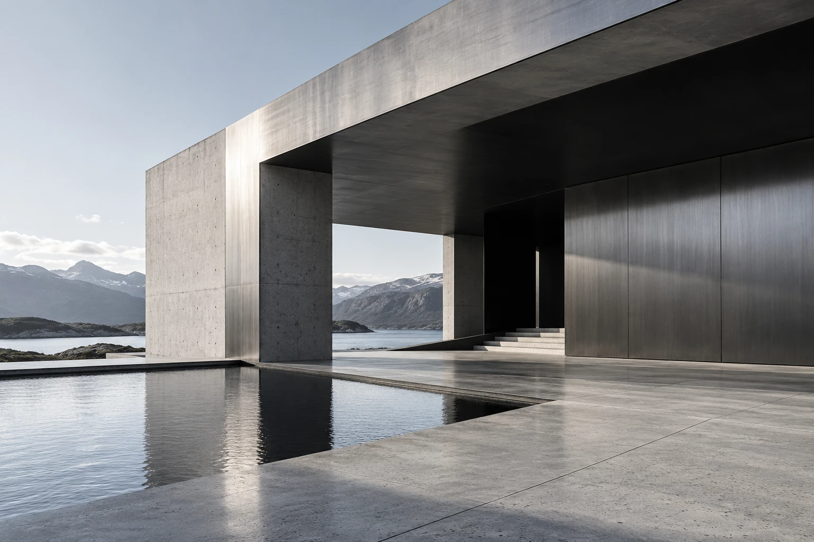

Частные дома
Простые объёмы, естественный свет и материалы, которые становятся частью ландшафта.
Архитектура начинается с повседневности. Света утром, вида из окна и маршрута от входа к любимому креслу.
Посмотреть направления
Простые объёмы, естественный свет и материалы, которые становятся частью ландшафта.
Места для встреч и движения. Понятная навигация и пространство, которое не требует объяснений.
Для проекта бюро важны портфолио, ясная специализация и спокойный ритм просмотра. Крупная фотография задаёт масштаб, а типографика оставляет место для архитектуры.
Это пример подачи сайта. Бренд и визуал вымышлены; интеграции с оплатой, заказами или бронированием отсутствуют.
Обсудить похожий сайт